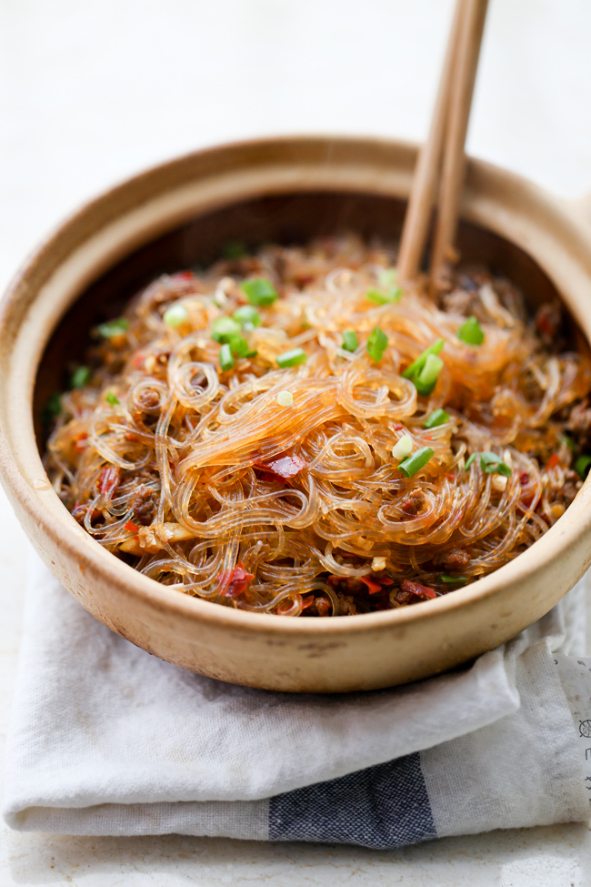

Ants in Trees recipe

Recipe for Ants in Trees noodle dish:
This recipe will make enough for about 4 servings.
You will need the following ingredients:
- 4.5 ounces mung bean noopdles
- 2 ounces soy sauce
- 1 tablespoon rice wine
- 1 tablespoon sambal chili paste
- 1 teaspoon cornstarch
- 10 ounces ground pork
- 1 tablespoon canola oil
- 4 green onions, chopped, divided
- 1/2 cup chicken broth
Preparing the dish:
- Soak the noodles in enough hot water to cover by 1 inch for 20 minutes. Use kitchen shears to cut the noodles into 3 to 4-inch pieces and drain thoroughly in a colander for 10 minutes.
- Combine the soy sauce, rice wine, and chili paste in a medium bowl and whisk until smooth. Add the cornstarch and whisk until combined. Add the pork and mix until thoroughly integrated. Set aside for 30 minutes.
- Place a 12-inch saute pan over high heat for 1 minute. Add the oil and swirl to coat the bottom and sides of the pan. Once the oil shimmers, add the meat mixture. Stir constantly for 2 minutes, breaking the meat up into very small pieces. Add 2/3 of the green onions and continue cooking and stirring until the meat is well browned and in very small pieces, approximately 2 minutes. Reduce the heat to medium-high and add the broth. Cook until reduced, approximately 3 minutes.
- Slowly add handfuls of the noodles to the pan, tossing with the meat mixture until combined and the pieces of meat cling to the noodles and no liquid remains. Serve immediately with the remaining green onions.